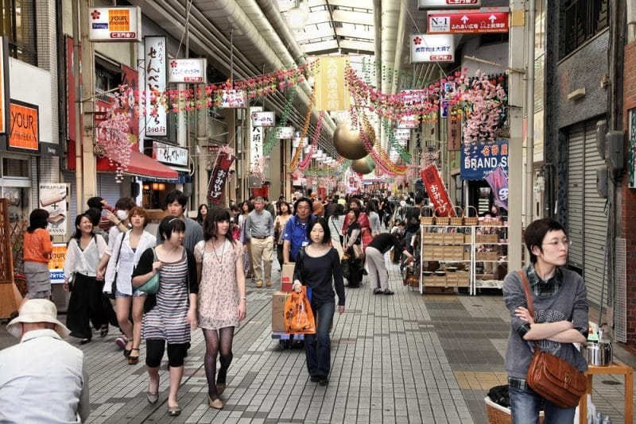

Vous allez au Japon et pensez visiter Nagoya ? Vous ne regretterez pas votre choix ! Découvrez les incontournables de cette ville souvent mal connue.
Située au centre de l’île d’Honshû, entre Osaka et Tokyo, Nagoya n’est souvent envisagée qu’en tant que nœud ferroviaire, où l’on change de train pour rejoindre une autre partie du Japon. Boudée par les touristes étrangers, la ville industrielle est pourtant loin d’être dépourvue d’intérêt. Lorsque l’on fait l’effort de visiter Nagoya, on est rapidement conquis !
Vous vous demandez que faire à Nagoya ? Petit tour d’horizon des choses à ne pas manquer dans cette mystérieuse cité nippone !
1. Le château de Nagoya et le palais Honmaru
Visiter le château de Nagoya est un des must-do d’un séjour à Nagoya. Cet édifice construit au XVIIe siècle, durant la période d’Edo, est un des plus beaux du Japon. Il n’a pas été épargné par les ravages de la Seconde Guerre mondiale. Toutefois, les multiples rénovations dont il a été l’objet lui ont redonné sa splendeur d’antan.
Soyez parmi les premiers à venir admirer les fresques du palais Honmaru, qui vient tout juste d’être reconstruit. Pour terminer votre visite sur une petite touche zen, promenez-vous dans le parc du château. Que vous y soyez au printemps, durant la période où les cerisiers sont en fleurs, ou en automne, lorsque les teintes rousses des érables dominent la végétation, vous serez conquis !
2. Le musée d’art Tokugawa et son jardin
Vous rêvez de voir de vrais katanas ? Venez visiter le musée privé de Tokugawa, qui est une dynastie de shoguns ayant dirigé le Japon durant l’époque d’Edo. Vous pourrez admirer la collection du clan, composée de pas moins de douze mille pièces (armures, peintures, vêtements, etc.). Si vous cherchez du calme en pleine ville, venez vous balader dans les jardins de Tokugawa.
3. Le quartier de Sakae
Vous voulez vivre des expériences esthétiques singulières ? Venez explorer le quartier de Sakae.
Extrêmement vivant, c’est aussi en son cœur que l’on trouve deux bizarreries architecturales ! Première de sa catégorie, la TV Tower date de 1954. Si elle ne peut rivaliser avec notre tour Eiffel, elle a des airs de son homologue française. À quelques pas de là, et dans une même veine architecturale, venez découvrir l’étrange navette spatiale du centre commercial Oasis 21. Cette ellipse de verre et d’acier a davantage de cachet lorsque le soleil s’est couché. Bienvenus dans le futur ! Si l’architecture ne vous séduit pas, et que vous ne savez que faire à Nagoya le soir, Sakae est aussi le quartier dans lequel il faut se rendre pour faire du shopping ou terminer la journée.
4. Le musée des sciences
Vous ne savez que faire à Nagoya avec des enfants. Nous avons la réponse ! Construit sur sept étages, vous ne saurez plus où donner de la tête, tant le nombre et la qualité des expositions et des expériences sont hors du commun. Très ludique et pédagogique, le musée des sciences de Nagoya est impressionnant, avant même d’y être entré. Il est notamment réputé pour son planétarium qui n’est rien moins que le plus grand au monde !
5. Le sanctuaire Atsuta-Jingu
À côté des temples bouddhistes, Nagoya abrite également le deuxième plus grand sanctuaire shintô du Japon. Situé au sud de Nagoya, Atsuta-Jingu revêt une importance particulière pour les Japonais. Ce sanctuaire, qui a fêté ses mille-neuf-cents ans il y a peu, honore la légendaire épée de Kusanagi.
6. Le zoo et le jardin botanique d’Higashiyama
Situé au nord-est de Nagoya, le zoo d’Higashiyama abrite de nombreuses espèces animales, dont des koalas et des éléphants. Pour les plus jeunes, il est possible de caresser de petits animaux. Au cœur du jardin botanique, la plus vieille serre du Japon abrite plus de sept mille espèces de plantes, si subtilement agencées que l’on croirait parfois se promener en pleine nature. Et pourtant vous êtes toujours en train de visiter Nagoya !
7. Le port et l’aquarium de Nagoya
Ville industrielle, Nagoya a tenté de se donner une image plus séduisante en transformant son port. Pari réussi ! Envolez-vous sur la grande roue, promenez-vous le long du Garden Pier ou évadez-vous en mer le temps d’une visite de l’aquarium. Celui-ci ravira les plus petits, mais aussi les plus grands ! Si les dauphins et les bélugas offrent un beau balai, les pensionnaires les plus impressionnants sont les orques.
8. Le temple Osu Kannon
Vous avez un vœu à faire ? Couchez-le par écrit et accrochez-le à une grande lanterne rouge, située à l’intérieur du temple bouddhiste Osu Kannon. L’édifice abrite également la bibliothèque Shinpuku-ji-bunko, où sont conservés plus de quinze mille livres d’auteurs classiques, tant japonais que chinois, dont certains exemplaires sont réputés comme extrêmement précieux.
9. Flâner dans le quartier d’Osu

Non loin du temple Osu Kannon, vous ne pouvez manquer la shotengai (galerie commerçante) du quartier d’Osu. Vous trouverez forcément votre bonheur dans l’une des boutiques de cette allée qui s’étend sur près de deux kilomètres. Des bars en passant par des restaurants ou des magasins d’antiquités, vous ne pourrez résister à la tentation ! Si vous visitez Nagoya au mois d’août, vous aurez la chance d’assister aux championnats du monde de cosplay !
10. Le château de Kiyosu
Si le château de Nagoya est plus imposant, l’origine de celui de Kiyosu est plus ancienne. Alors que la capitale de la province d’Owari n’était pas encore Nagoya, le château de Kiyosu dominait la région. Construit au XIVe siècle, l’édifice est d’abord démonté pour permettre la construction de celui de Nagoya. Il n’a été reconstruit qu’en 1989.
11. Le temple Togan-Ji et son Bouddha vert
Cet endroit est encore méconnu des grands circuits touristiques. Si le temple est intéressant à visiter et qu’il est agréable de se promener dans la forêt de bambous, les lieux sont surprenants à découvrir pour l’étrange habitant qui y réside : un Bouddha vert de quinze mètres de haut ! Cette rencontre incongrue ne manquera pas de vous surprendre et vous comprendrez qu’à Nagoya, rien n’est comme ailleurs !
12. Le musée commémoratif de l’industrie et de la technologie de Toyota
Vous l’ignoriez peut-être, Toyota est née à Nagoya ! Passionné de voiture ou non, il serait dommage de visiter Nagoya sans venir au musée commémoratif, sur les traces du plus grand constructeur automobile mondial. Vous pourrez admirer les plus anciens modèles de la marque, comme les plus récents, ou activer puis observer le fonctionnement des chaînes de montage. Vous découvrirez d’anciens métiers à tisser, du temps où Toyota travaillait pour le secteur du textile !
13. La gare de Nagoya
Visiter une gare ? Oui ! Nagoya détient un record, celui de posséder la plus grande gare du monde, en terme de superficie. Venez vous perdre dans les 410 000 m² de ce mastodonte gardé par deux immenses tours ultra-modernes de plus de cinquante étages. Si vous n’avez pas de train à prendre, vous pourrez profiter d’une vue imprenable sur Nagoya, depuis la Sky street, qui relie les deux tours.
14. Assister à un combat de sumo
Et sur le plan sportif, que faire à Nagoya ? Si vous avez la chance de visiter Nagoya en juillet, ne manquez pas l’opportunité qui s’offre à vous d’assister à un combat de sumo. Pour voir ces imposants lutteurs en action, les places sont difficiles à obtenir. Alors veillez à bien vous organiser. Ce serait dommage de rater cet incroyable spectacle, typiquement japonais !
15. Déguster les spécialités locales au marché central de Marunaka
Vous avez faim ? Cela tombe bien ! Venez déguster l’une des spécialités locales de Nagoya ou de l’archipel nippon. Entre yakitoris, sushis, tempuras, miso katsu et autres mets traditionnels, vous trouverez de quoi vous mettre sous la dent. Pour les plus téméraires, testez une anguille !
16. Depuis Nagoya, découvrez le Japon loin des villes
Visiter Nagoya, ce n’est pas rester prisonnier de ses murs. Vous voulez faire une escapade nature, loin de l’effervescence citadine ? Que faire autour de Nagoya ? En moins de deux heures, vous pouvez déambuler dans les adorables villages de Magome ou de Nagiso. La préfecture de Mie, situé au sud de Nagoya, recèle également de belles perles, comme le parc de Nabana No Sato ou le mont Gozaïcho. Plus près de Nagoya, venez visiter le château d’Inuyama ou la péninsule de Chita.